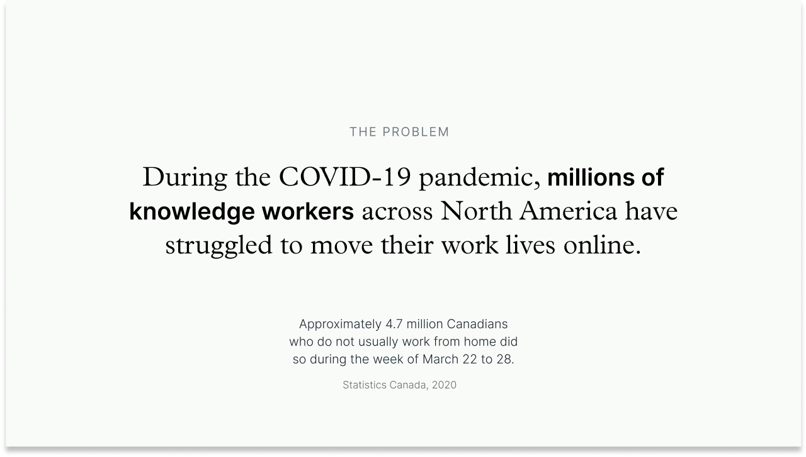
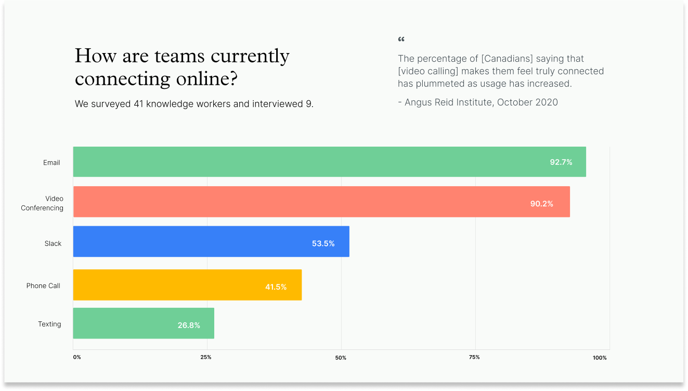
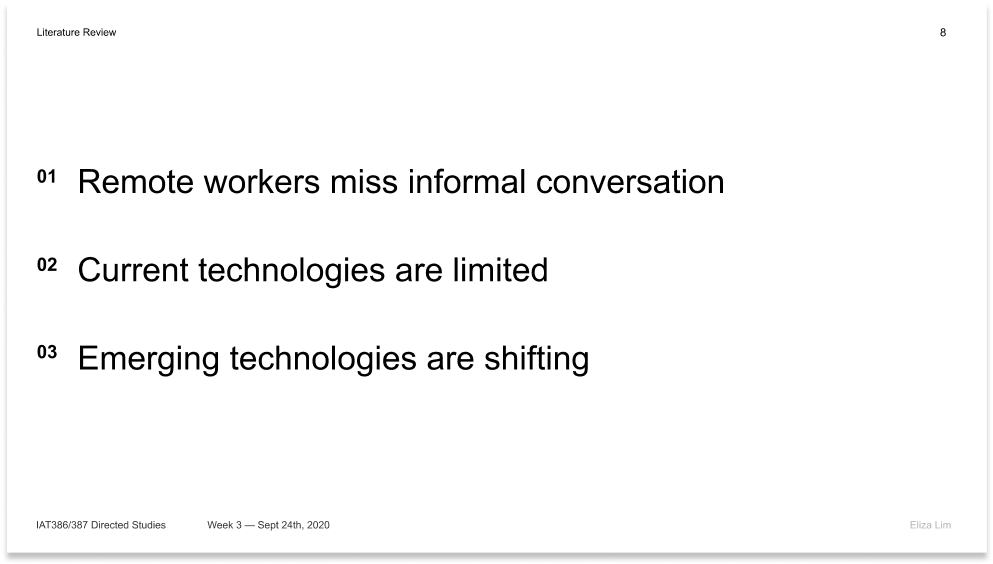
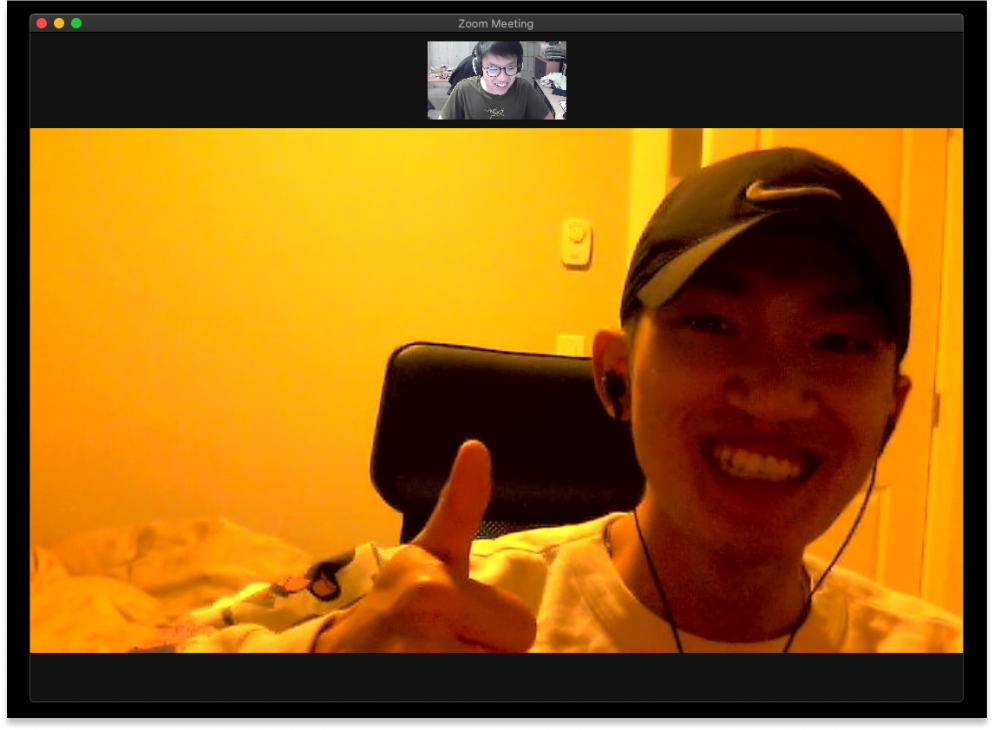

Wörkestra is a desktop and mobile app that allows remote coworkers to see and hear each other’s keyboard
and mouse clicks. Wörkestra is an exploration of how teams can be more present with each other over
distance while bringing joy into the remote workday.
This project was a thirteen-week directed study supervised under Carman Neustaedter,
taking a deep dive into the informal conversation habits of knowledge workers in North America.
Within the project, our team conducted a literature review and user interviews to ultimately build a
research report documenting COVID-19’s impact on project teams. This report informed our solution —
Workestra, a new interaction for remote teams with the aim to reduce social isolation throughout the workday.

Problem
Due to COVID-19, companies have moved team collaboration solely online,
causing 4.7 million Canadians to depend on online communication systems. According to the Angus
Reid Institute, “the percentage of [Canadians] saying that [video calling] makes them feel truly
connected has plummeted as usage has increased.” Authentic interactions such as spur-of-the-moment
conversations feel awkward and forced online, which is a missed opportunity for building team rapport.
“ I miss grabbing lunch with the team. All we talk about is work now.”

These seemingly small, but meaningful in-person interactions such as stopping by a co-worker’s
desk to catch up, are examples of how these conversations can foster social support, collaboration,
and satisfaction within the workplace. From our findings, 95% of survey respondents said it was
difficult to socialize with their co-workers in a remote setting. Fostering authentic social
relationships online is important in the workplace, for the sake of mental health and a
productive team environment.
For a full breakdown of our findings, check out the full research report here.
Wörkestra is a desktop and mobile app that allows remote coworkers to see and
hear each other’s keyboard and mouse clicks. Wörkestra is an exploration of how
teams can be more present with each other over distance while bringing joy into
the remote workday.
Turn your sound on for the video!
When to use Workestra
There are many ways to use Workestra, whether it’s playing music together,
shaking your teammates for fun, or sending emojis to one another, Workestra is a flexible,
yet productive playground for your team to inhabit.
For a full list of features, check out our Final Slidedeck.
Click + Drag any of your coworker’s icons back and forth to distort their sound.
Think of it as a tap on the shoulder or a friendly way to say hello during the workday.
The wiggled team member will receive a notification and can follow up through their
company communication platform..
2. Send Emojis with Keywords
Type keywords and phrases like “breaktime” or “coffee” in any application to give
your team a hint about what you’re doing and where you are in your workday. Unique
keywords can be programmed by individual team members and can be used to send subtle
messages to their team.
3. Keep Workestra on the Side
With Workestra Mini, team members can see their co-workers in their peripheral vision.
Curious team members can hover over the musical bars to reveal a profile picture of
the currently active team member.
4. Sync up with Co-Workers
Remote work can be lonely. Workestra shows when you and your coworkers are both
typing above 90 words per minute — in other words: “in the zone” — by making
your instruments sound more resonant.
Process
1/6 - Literature Review
Our research was focused on the importance of informal communication habits within the workplace.
In order to narrow into the scope of our research, we conducted a literature review, grouped our insights,
and created a proposal document. These were our insights:

Our group also wanted to take an ethical approach to conducting research.
In the first week of our Directed Study, we all completed the TCPS2, a Canadian
certificate for ethics, which helped us understand how to ethically conduct data.
Our team wanted a mix of qualitative and quantitative research,
with our primary audience as full-time remote workers collaborating in team-based environments.
Our assumption was that remote workers were frustrated that their communication platforms lacked
the frequency and richness that face-to-face interactions provided.
With our surveys, we were interested in their satisfaction with the types of platforms they
were currently using to communicate informally. With the interviews, we wanted to know how
informal conversations arose in the workplace, and how important informal conversation was to them.

We interviewed nine participants that worked remotely.
According to this participant, informal collaboration is extremely important!
3/6 - Identifying the Audience
Our team wanted a mix of qualitative and quantitative research,
with our primary audience as full-time remote workers collaborating in team-based environments.
Our assumption was that remote workers were frustrated that their communication platforms lacked
the frequency and richness that face-to-face interactions provided.
With the surveys and interviews, we wanted a few research questions answered.
In our personas, we wanted to be as vivid as possible, noting details such as tools used,
lanugage when talking to other, living conditions, and attempting to document the types of
relationships that each level of management had together.
Zoom in to take a closer look at the details!
4/6 - Guiding Principles
Before jumping into the form of the design, we decided to create some
guiding principles, as a constant reminder to create something that would bring benefit to the
workday. As we were verging the line between work and play, these guiding principles were a
constant reminder to create something that would benefit, instead of getting our heads wrapped
up in novel interactions.
5/6 - Initial Exploration
Our initial solution proposal was called RADIO.io, a web application
that allows remote teammates to connect to each other’s musical channels. However, what we were
proposing with RADIO felt too similar to other solutions, such as Tandem. Because of this, we
decided to pivot and revisit the drawing board.
One aspect that caused the major pivot was that RADIO.io required individuals to actively use
the software. We were afraid that this would be too distracting, and their work performance would
suffer.
We presented RADIO.io to our professor, but we were unhappy with the direction it was taking.
6/6 - Shaping the Solution
Our goal with Workestra was to introduce more presence while bringing
joy into the workday. Our solution balances a fine line between distraction and productivity.
Therefore we opted for the main interaction to be passive, with the active interaction to be
intentional methods of reaching out, such as shaking your co-workers to get their attention.
Our form was inspired by chords in musical notation, where each team-member is represented by a
note in a chord. We wanted co-workers to passively play music together. These sketches below
were our basis for creating Workestra.
Early iterations of Workestra.
After finishing the final design, we realized there was no way to
test our interaction. In the last few days of the Directed Study, we made a rough prototype
to get an understanding of what Workestra would feel and sound like.
Although we weren’t able to connect users to our web-app, we coded a very patchy prototype
to test the interaction.
Reflections
Designing an application for the pandemic felt like we were working on real innovation.
This problem space afforded exploration through many facets of remote work, due to new problems, presenting fruitful
opportunities for intervention. We were debating on continuing this idea and bringing it to life, but due to a security
issue with keylogging, we decided against it.
Although there were instances of struggle and frustration, we are extraordinarily proud of our creation.
After completing the project, many of us showed Workestra to friends, family, and working professionals,
and were blown away by the need for something like this in the workplace.
This was our team! Right to left: Ethan, Eliza, Brendan, Audrey.


 This was our team! Right to left: Ethan, Eliza, Brendan, Audrey.
This was our team! Right to left: Ethan, Eliza, Brendan, Audrey.